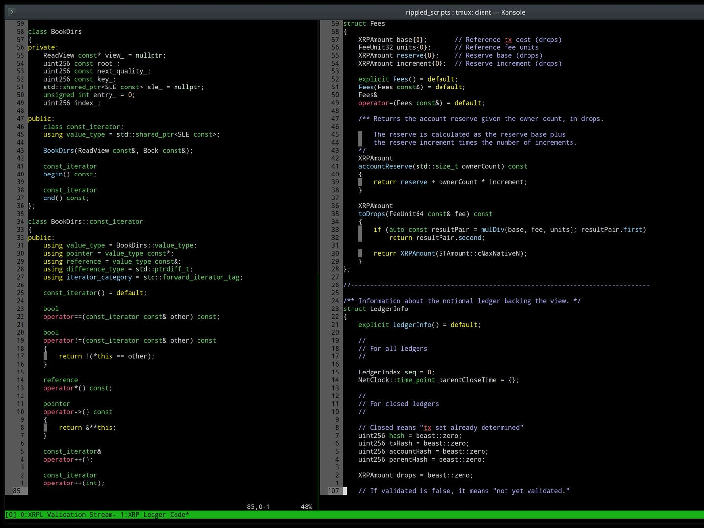
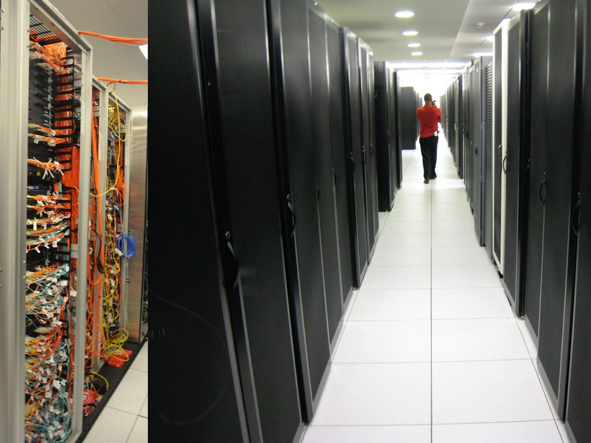

XRP Ledger Foundation
To foster development on, and widespread usage of the XRP Ledger
Values and Beliefs
- We value our role as an independent organization acting as a steward for the XRP Ledger
- We believe trust is foundational to our mission and building trust is a slow, steady process
- We believe in close working relationships with developers and organizations that build on and contribute to the XRP Ledger
- We value having the resources and support to compete on an equal playing field with other foundations in achieving our goals
- We value cultivating a diverse XRP Ledger ecosystem, where many entities contribute to and benefit from the XRP Ledger

Driving research and development and contributing to the code that is the core of the XRP Ledger.
- Developer relations
- Funding and resources for core software development
- Software branding, packaging, and distribution
- Data and analytics driven decision making
- Fraud monitoring and prevention

Ensuring reliable transaction submissions and data querying to so everyone has reliable access to the XRP Ledger.
- High-availability servers provide 24/7/365 access for anyone to query the full ledger history or submit transactions
- Monitoring and live data
- Mentoring for infrastructure providers
- Publishing a UNL
Social Impact & Engagement
- Engaging businesses, non-profits, and regulators to build synergy within and across key sectors in order to broaden our social impact
- Identifying and funding showcase projects with high social impact
- Collaboration with UBRI partners
Connecting diverse stakeholders to cultivate a thriving, vibrant XRP Ledger ecosystem.
- Strategic, coordinated engagement to further XRP Ledger adoption
- Collaboration with diverse stakeholders, such as businesses and universities
- Fund raising